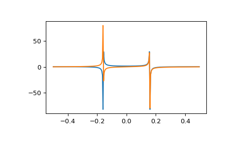

scipy.fft.fft¶
-
scipy.fft.fft()[source]¶ Compute the 1-D discrete Fourier Transform.
This function computes the 1-D n-point discrete Fourier Transform (DFT) with the efficient Fast Fourier Transform (FFT) algorithm [1].
- Parameters
- xarray_like
Input array, can be complex.
- nint, optional
Length of the transformed axis of the output. If n is smaller than the length of the input, the input is cropped. If it is larger, the input is padded with zeros. If n is not given, the length of the input along the axis specified by axis is used.
- axisint, optional
Axis over which to compute the FFT. If not given, the last axis is used.
- norm{None, “ortho”}, optional
Normalization mode. Default is None, meaning no normalization on the forward transforms and scaling by
1/non theifft. Fornorm="ortho", both directions are scaled by1/sqrt(n).- overwrite_xbool, optional
If True, the contents of x can be destroyed; the default is False. See the notes below for more details.
- workersint, optional
Maximum number of workers to use for parallel computation. If negative, the value wraps around from
os.cpu_count(). See below for more details.
- Returns
- outcomplex ndarray
The truncated or zero-padded input, transformed along the axis indicated by axis, or the last one if axis is not specified.
- Raises
- IndexError
if axes is larger than the last axis of x.
See also
Notes
FFT (Fast Fourier Transform) refers to a way the discrete Fourier Transform (DFT) can be calculated efficiently, by using symmetries in the calculated terms. The symmetry is highest when n is a power of 2, and the transform is therefore most efficient for these sizes. For poorly factorizable sizes,
scipy.fftuses Bluestein’s algorithm [2] and so is never worse than O(n log n). Further performance improvements may be seen by zero-padding the input usingnext_fast_len.If
xis a 1d array, then thefftis equivalent toy[k] = np.sum(x * np.exp(-2j * np.pi * k * np.arange(n)/n))
The frequency term
f=k/nis found aty[k]. Aty[n/2]we reach the Nyquist frequency and wrap around to the negative-frequency terms. So, for an 8-point transform, the frequencies of the result are [0, 1, 2, 3, -4, -3, -2, -1]. To rearrange the fft output so that the zero-frequency component is centered, like [-4, -3, -2, -1, 0, 1, 2, 3], usefftshift.Transforms can be done in single, double, or extended precision (long double) floating point. Half precision inputs will be converted to single precision and non-floating-point inputs will be converted to double precision.
If the data type of
xis real, a “real FFT” algorithm is automatically used, which roughly halves the computation time. To increase efficiency a little further, userfft, which does the same calculation, but only outputs half of the symmetrical spectrum. If the data are both real and symmetrical, thedctcan again double the efficiency, by generating half of the spectrum from half of the signal.When
overwrite_x=Trueis specified, the memory referenced byxmay be used by the implementation in any way. This may include reusing the memory for the result, but this is in no way guaranteed. You should not rely on the contents ofxafter the transform as this may change in future without warning.The
workersargument specifies the maximum number of parallel jobs to split the FFT computation into. This will execute independent 1-D FFTs withinx. So,xmust be at least 2-D and the non-transformed axes must be large enough to split into chunks. Ifxis too small, fewer jobs may be used than requested.References
- 1
Cooley, James W., and John W. Tukey, 1965, “An algorithm for the machine calculation of complex Fourier series,” Math. Comput. 19: 297-301.
- 2
Bluestein, L., 1970, “A linear filtering approach to the computation of discrete Fourier transform”. IEEE Transactions on Audio and Electroacoustics. 18 (4): 451-455.
Examples
>>> import scipy.fft >>> scipy.fft.fft(np.exp(2j * np.pi * np.arange(8) / 8)) array([-2.33486982e-16+1.14423775e-17j, 8.00000000e+00-1.25557246e-15j, 2.33486982e-16+2.33486982e-16j, 0.00000000e+00+1.22464680e-16j, -1.14423775e-17+2.33486982e-16j, 0.00000000e+00+5.20784380e-16j, 1.14423775e-17+1.14423775e-17j, 0.00000000e+00+1.22464680e-16j])
In this example, real input has an FFT which is Hermitian, i.e., symmetric in the real part and anti-symmetric in the imaginary part:
>>> from scipy.fft import fft, fftfreq, fftshift >>> import matplotlib.pyplot as plt >>> t = np.arange(256) >>> sp = fftshift(fft(np.sin(t))) >>> freq = fftshift(fftfreq(t.shape[-1])) >>> plt.plot(freq, sp.real, freq, sp.imag) [<matplotlib.lines.Line2D object at 0x...>, <matplotlib.lines.Line2D object at 0x...>] >>> plt.show()
